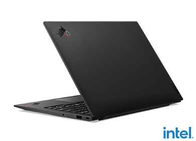
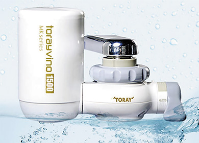
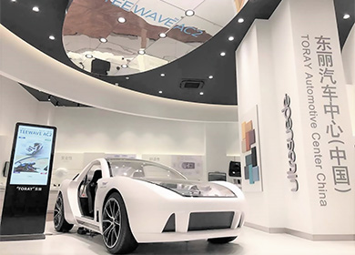

東麗先端材料研究開発（中国）有限公司[TARC]
東麗先端材料研究開発（中国）有限公司は、TFRC社の上海分公司を母体として、拡大する中国市場向けの技術・製品開発、技術サービスの強化と中国で研究する意義のあるテーマの研究推進のため、2012年1月に発足しました。 東レグループは中国市場における事業拡大を推進するため、TFRC、TARCの2社体制で、研究・技術開発を強化していきます。
先端材料研究所（上海研究センター）
先端材料研究所（上海研究センター）では、日本の研究所との一体運営により、「新エネルギー材料」「高分子材料」といった材料分野における研究を推進しています。当社のコア技術である「有機合成化学」「高分子化学」「ナノテクノロジー」の基礎研究力強化を図り、地球環境問題への対応に代表される社会のパラダイムシフトを先導する次世代先端材料の研究と、革新的な基幹素材を創出するための高分子材料研究を推進しています。

ノートパソコンに使用されるCFRPハイブリッド筐体
材料応用開発センター
材料応用開発センターは、フィルム分野、複合材料分野、電子情報材料分野における中国での事業拡大に貢献するための技術・製品開発、技術サービスを推進しています。

家庭用浄水器
水処理研究所
水処理研究所では、中国向け家全体浄水システム開発や上水高度処理、下水・産業廃水再利用技術、海水淡水資源化技術の開発を行っています。同時に、中国における東レ水処理膜製品の技術サポートを行い、東レの膜技術の中国市場での応用を推進するとともに、中国の一流大学、有力企業と共同研究開発を行い、積極的に国家計画や地方の重点科学技術研究プロジェクトに参加しています。

AMCCショールーム
オートモーティブセンター（中国）
オートモーティブセンター（中国）（略称：AMCC）は、世界最大の自動車市場である中国のお客様とのコミュニケーション強化を目的として、2011年に開所しました。AMCCショールームでは、軽量化、電動化、安全性、快適性の4つのカテゴリーの展示コーナーに加え、先端素材と技術の総合力を結集したコンセプトカー「TEEWAVE®」 AC2を展示することでお客様へのトータルソリューションを提供します。